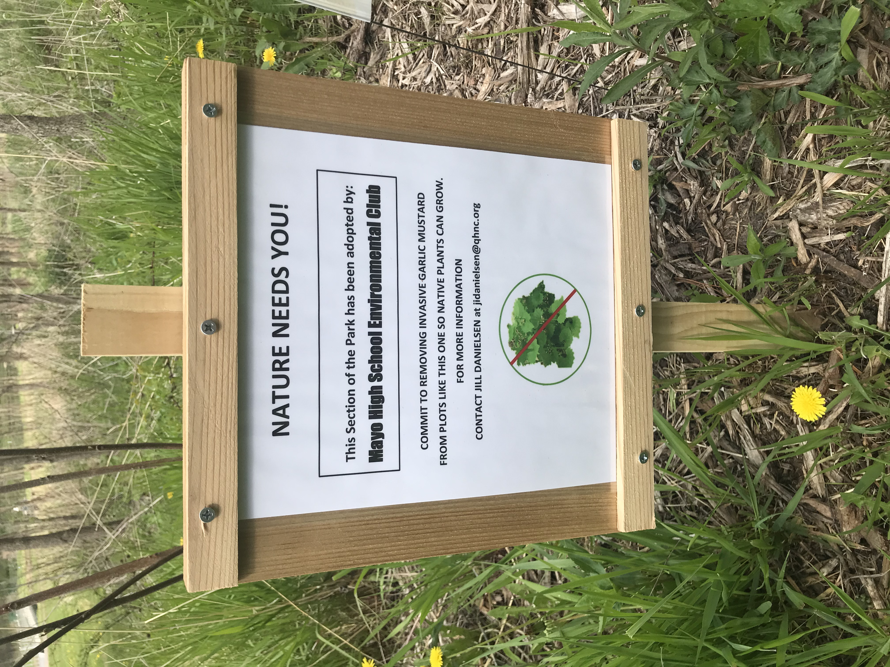
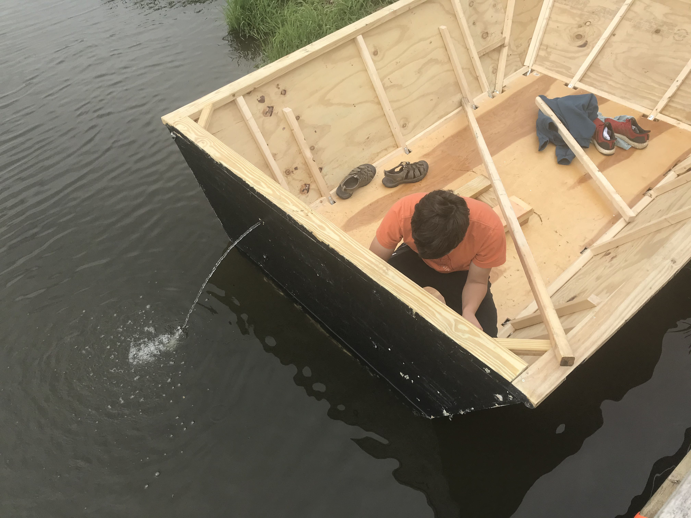

Over the summer I started an invasive species removal initiative. I lead members of EACMHS along with other Mayo High School students to properly remove garlic mustard at Quarry Hill Nature Center.
I enjoy working on carpentry projects because of the infinite possibilities that can come from engraving, cutting and re-shaping of wood. Over the summer I built a crane and helped build my family a garage. Many of my other personal projects are made from wood too, such as my boat.
This is an image of one of the boats I constructed with my friends. In the image you can see the highly sophistocated bilge system implemented in the the boat in order to drain water from the bottom of the boat and ensure that it floats.


Although I find a great amount of time to pursue activities such as volunteering, building and leading, most of my time is actually spent studying as well. Throughout highschool I have met many of my goals as a competitive student. Here are a few to name.